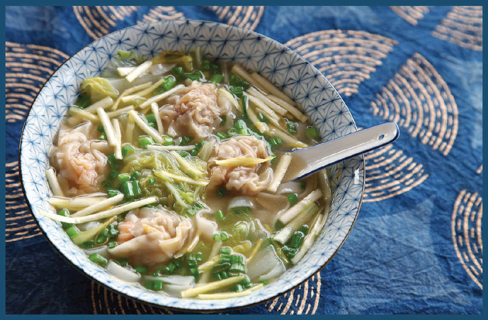

THE BEST WONTON SOUP

A few years back, I made it my mission to try every bowl of wonton soup worth trying in New York City (a pretty tall task) and found that when done right wonton soup need not be the cheap appetizer of choice but a worthy dish unto itself. There are the Chinese American roast pork broth versions with thick-skinned wontons sold at barbecue shops, or the kind with large pork- and bok choy-filled wontons served floating in chicken soup with noodles at the Shanghai restaurants. At the city’s handful of Fuzhou restaurants you can get broth filled with dozens of wispy, comet-shaped wontons that look like Pac-Man ghosts, with bits of pickle and dried shrimp.
But my favorite version is the rich shrimp and pork version served in Hong Kong. The broth is made with Superior Stock, flavored with pork (and often chicken), dried ham, and dried seafood (typically dried flounder and shrimp roe). The wontons are stuffed fuller than most, folded into little round parcels, filled with juicy pork and shrimp that pop out as you bite through the thin, thin wrappers, the shrimp crunching under your teeth as you chew.
This is the version of wonton soup that I crave, and this is the version that, once you have Superior Stock under your belt, is a simple matter of making the wontons and putting it all together.
THE WONTON FILLING
The filling for Hong Kong–style wontons is generally made with lightly seasoned pork flavored with ginger, yellow chives, soy sauce, and sesame oil, along with some form of shrimp. In the simplest version the shrimp is ground up right along with the pork, but I personally prefer the version in which the shrimp are left intact, each wonton being stuffed with a single plump, crunchy shrimp. You get this by soaking the shrimp in an alkaline brine before adding them to the wontons (see here for more on how alkaline brines make shrimp plump).
For the wrappers, I use store-bought skins (the square kind, not the round dumpling variety) of the thinnest gauge I can find. If you have an option between plain wheat flour wrappers and those that are enhanced with egg yolk, go with the latter, as they stand up to boiling a little bit better, developing a nice chewiness as they cook. (Be aware that some brands of wonton wrappers offer both white and yellow varieties, the only difference being the inclusion of food coloring to simulate eggs.)
You can shape your wontons any way you wish. The easiest are the comet-shaped wontons where you place a wrapper on your hand, add a small dollop of filling and a shrimp, then squeeze it all shut. Almost equally simple is a triangle shape, in which you lay the wrapper flat on a board, add the filling, then fold the wrapper over. In either case, make sure to moisten the wrapper with a fingertip or brush of water before sealing to help it close up tight, and squeeze out as much air as possible before sealing in order to prevent them from blowing out as they simmer.
For a fancier “water caltrop” shape, follow the step-by-step instructions on here.